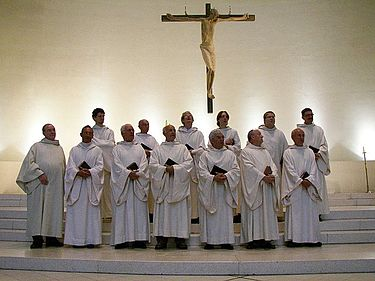

List of music genres: Sacred music
There are only four musical styles: folk music, sacred music, academic music and popular music. Each genre has a number of genres of music and each genre has many subgenres.
Music is an integral part of most people's lives. Musical works are listened to in all corners of our planet, even in the most distant ones. Despite the immense popularity and importance of this art movement, many people do not think about what styles and genres of music exist. This article discusses the TOP-10 musical directions, which have not lost their popularity to this day.
Due to the variety of different genres, many of you are wondering: What styles of music are there? We have tried to answer your question and organize the main styles of music in a separate list, which, in the opinion experts will always be popular despite many years.
Spiritual music
Sacred music - musical works related to texts of a religious nature, intended to be performed as during a church service, and in everyday life. Sacred music in the narrow sense means church music of Christians; in a broad sense, sacred music is not limited to accompaniment worship and is not limited to Christianity. The texts of sacred music compositions can be both canonical (for example, in W.A. Mozart's Requiem), and free (for example, in motets by Guillaume de Machaut), written on the basis or under the influence of sacred books (for Christians - the Bible)